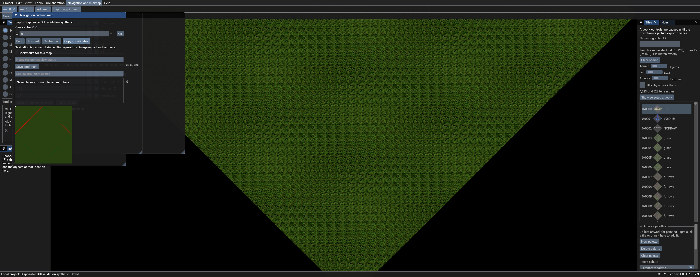

WINDOWS X64
Local editor
Extract the ZIP into its own folder, then run CentrEDSharp-Local.exe. Runtime and native libraries are included. Bring your own compatible UO artwork and map data.
37.6 MB · Development build · Unsigned community software
CENTRED# LOCAL / 0.7.2 / DEVELOPMENT DOWNLOAD
Open local MUL or supported UOP maps, switch between map tabs and edit verified working copies. Local mode runs inside one Windows executable, without a separate map server or login.
WINDOWS X64
Extract the ZIP into its own folder, then run CentrEDSharp-Local.exe. Runtime and native libraries are included. Bring your own compatible UO artwork and map data.
37.6 MB · Development build · Unsigned community software
LOCAL EDITING WORKFLOW
The action bar brings Save map, Undo, Redo, Checkpoint, Go to, Inspector, Layers and Help together. Explicit X/Y navigation, Back and Forward, map-centre controls and searchable bookmarks help you return to a location.
Find artwork by name or exact decimal / hexadecimal ID. Sample graphics and hues from the inspector; choose visible height ranges and artwork filters. Map tabs save before switching and keep each map’s palettes and bookmarks separate.
Bulk editing reports progress and supports cancellation. Preview cleanup before applying it, keep named checkpoints and undo or redo accepted changes. Local project snapshot, restore and export support recovery.
Blueprint interchange supports anchor placement, rotation and mirroring. Undo history restarts when switching map sessions. Maps and UO artwork remain external data.

VALIDATION AND INTEGRATION LIMITS
The release record reports 255 passing checks with zero failures or skips. The packaged executable alone passed native-library, resource and synthetic GUI checks, including bulk editing, cancellation, cleanup, undo/redo, checkpoints, export and two-map switching. Supported UOP map loading was checked on a copied data set.
The published ZIPs match the verified executable and source archives. CRC checks, archive checksums, privacy review and upstream notices were checked before publication.
Receiving-computer, live multiplayer and in-game acceptance are unverified. A multiplayer radar broadcast defect remains open; use this development release for local editing. Review exported map data in your own target environment before deployment.
This fork builds on kaczy93’s CentrED# under the MIT license. Dependency licenses and attribution are retained in the third-party notices. The application/source archives retain their original development-build documentation.